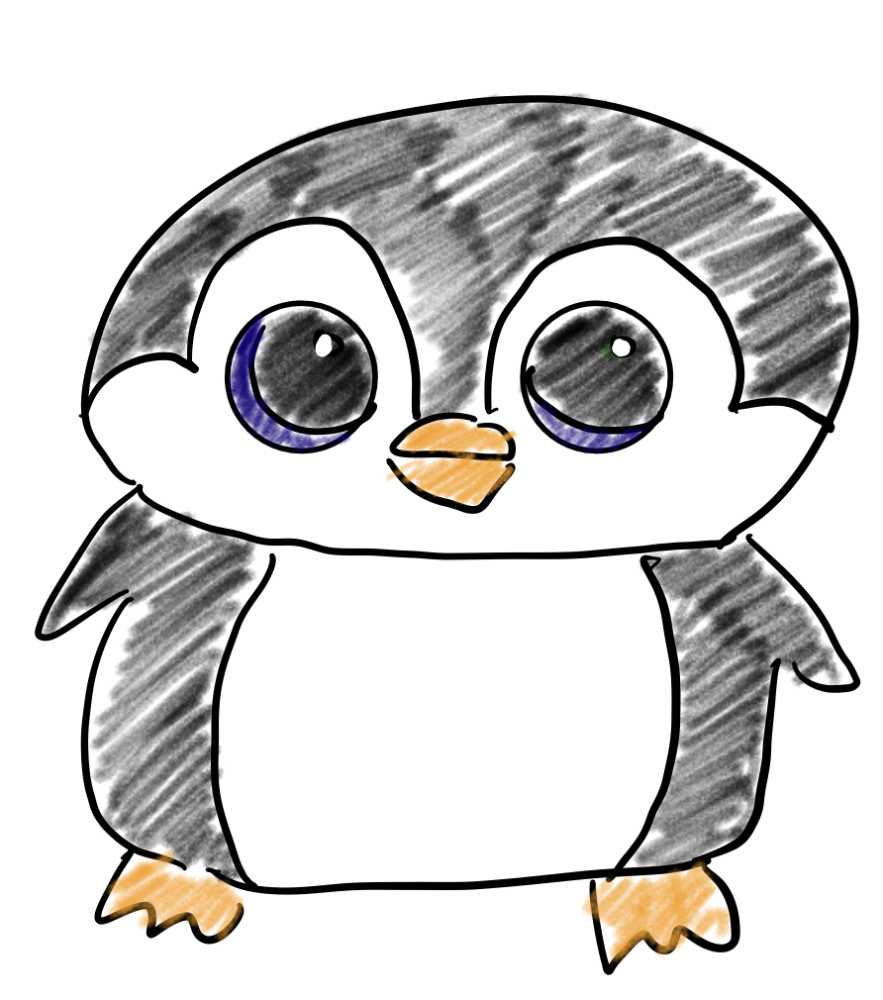
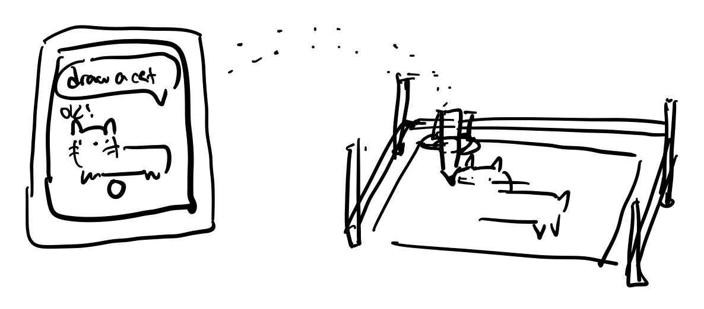

I want to create a robot companion that helps remind me to take my pills each morning. It’s composed of a robotic part and a smart pill box.
The robot will have animatronic eyes, a motion-sensing nose, and a speaker for the mouth. He will be on my nightstand. When he detects movement in the morning, and I haven’t taken my pill yet, he will talk to remind me to take it.
The smart pill box will detect whether I have opened the compartment for the corresponding day. One hour after I take the medication, my app will send a notification indicating it's safe to eat.
I was inspired to create this project because I need to take a pill each morning and cannot eat anything for an hour afterward. I sometimes forget to take the pill or remember the exact time I took it, which is problematic. This project will help me solve this issue.
I would like to build a custom Furby. Since I never owned a Furby growing up, I want to create one from scratch using a different plush animal as the base, while incorporating similar functionalities to the original.

I want to create a pen plotter that can draw coloring pages. I will develop an app that generates images using generative AI and then sends them to the drawing machine. I enjoy coloring, but I don't enjoy drawing, so this machine would be fun to have.
